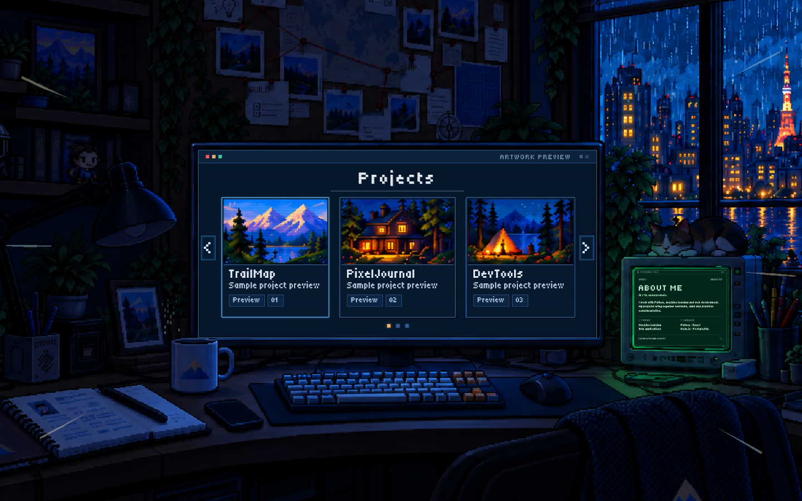
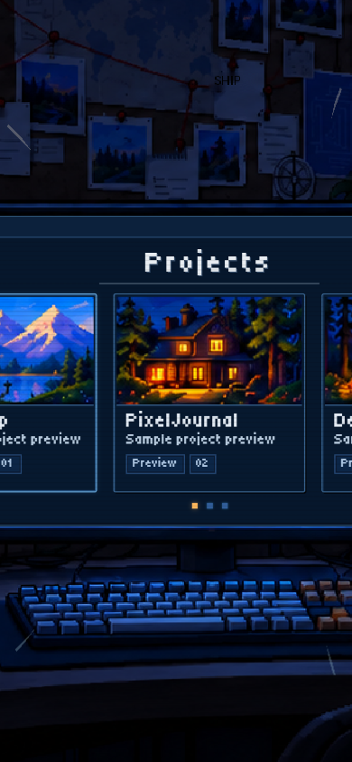
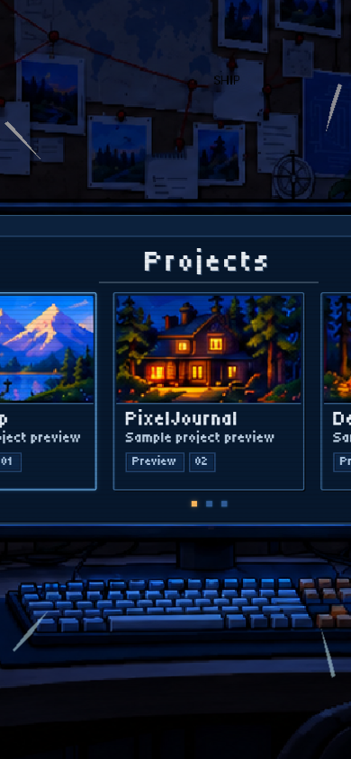
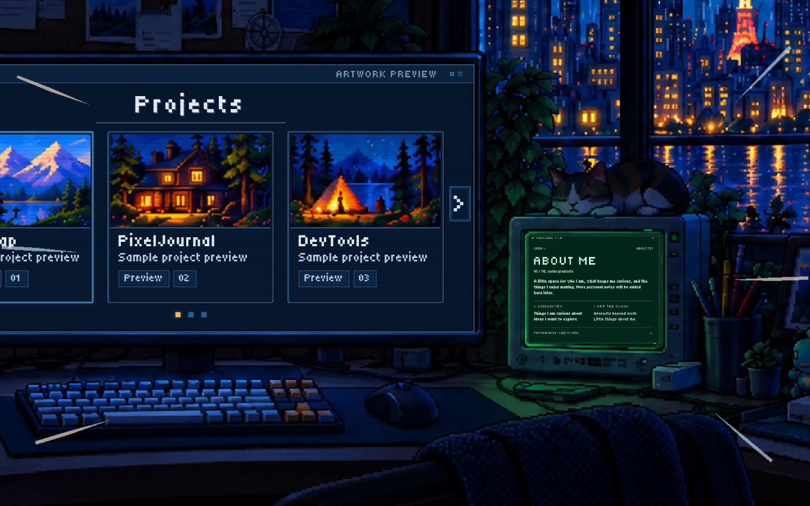
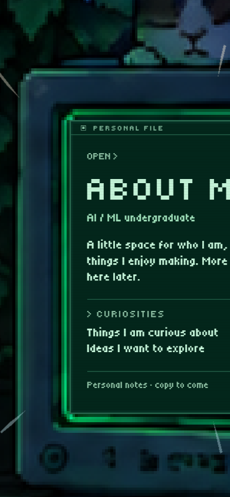

Try the studio · Projects recording · About Me recording
The camera motion is unchanged. Streaks are longer and thicker, with a brighter hold during the rush. These browser frames use the same viewport, room frame and animation time.




